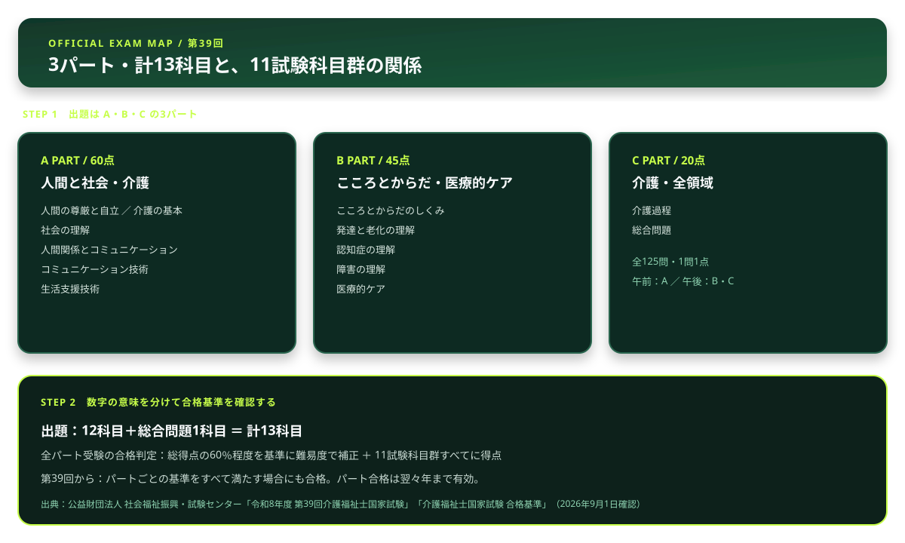

介護福祉士の独学合格ガイド【2026年版】試験科目・勉強時間・スケジュール
こんにちは、若葉です。「介護のプロとして唯一の国家資格を取ろう！」そう決意してテキストを開いたのに、13もの膨大な科目名がずらっと並んでいるのを見て……「うわっ、なんじゃこりゃ、覚える法律やからだの仕組みが多すぎて頭パンクするわ！シフト勤務で忙しいのに勉強時間なんて取れるかよ！」って固まっていませんか？（笑）その気持ち、痛いほど分かります。
この記事では、公式案内にある科目・パート・合格基準を先に整理し、忙しい中でも学習の順番を決めるための見取り図をつくります。科目数と合格判定の単位を分けて理解すると、何を確認すべきかが見えやすくなります。
この記事で整理した内容から、次の学習で確認することを1つ選び、記録に残してみてください。
介護福祉士国家試験は、科目構成とパート合格の仕組みを先に押さえると、学習計画を立てやすくなります。本記事では、第39回試験の公式案内をもとに、試験制度と学習の進め方を整理します。
介護福祉士試験の基本情報
| 項目 | 内容 |
|---|---|
| 試験日 | 令和9年1月31日（日） |
| 試験科目 | 3パート・4領域・12科目および総合問題1科目（計13科目） |
| 問題数 | 125問（五肢択一） |
| 試験時間 | 220分 |
| 合格基準 | 総得点の60％程度を基準に難易度で補正。全パート受験者は11試験科目群すべてで得点があることも条件 |
出典：公益財団法人 社会福祉振興・試験センター「令和8年度 第39回介護福祉士国家試験」、「介護福祉士国家試験 合格基準」（2026年9月1日確認）
13科目と11試験科目群を分けて整理する

出題は計13科目ですが、合格判定では11試験科目群が使われます。学習を始めるときは、公式のパート別内訳表に自分の苦手な科目を書き込み、パートA・B・Cのどこから確認するかを決めましょう。各科目の出題数や優先順位は、公式の出題基準と最新の試験情報を確認して決める必要があります。
仕事をしながら学習を進める4ステップ
| 段階 | 取り組むこと |
|---|---|
| 1 | 公式の科目・パート構成と、自分の受験資格・申込区分を確認する |
| 2 | テキストで全体像をつかみ、苦手な試験科目群を書き出す |
| 3 | 問題演習後に、誤答を科目群ごとに記録する |
| 4 | 受験前に公式の試験日時・持ち物・申込情報を再確認する |
パート合格制度（第39回から適用）
介護福祉士国家試験には、不合格でも一部を持ち越せる「パート合格」があります。仕事をしながら受験する人にとって、受験計画そのものが変わる制度です。
筆記試験は A・B・Cの3パートに分かれています。パートごとの合格基準をすべて満たした場合にも合格となり、パート合格はその試験の翌々年まで有効です。過去の結果によっては、不合格パートのみを受験します。
| パート | 試験科目群 | 配点 |
|---|---|---|
| A | ①人間の尊厳と自立・介護の基本／②社会の理解／③人間関係とコミュニケーション・コミュニケーション技術／④生活支援技術 | 60点 |
| B | ⑤こころとからだのしくみ／⑥発達と老化の理解／⑦認知症の理解／⑧障害の理解／⑨医療的ケア | 45点 |
| C | ⑩介護過程／⑪総合問題 | 20点 |
出典：公益財団法人 社会福祉振興・試験センター「令和8年度 第39回介護福祉士国家試験」（2026年9月1日確認）
おすすめテキスト
- 中央法規「介護福祉士受験ワークブック」：業界定番テキスト。丁寧な解説と豊富な問題数
- ユーキャン「介護福祉士速習レッスン」：フルカラーで読みやすい。初学者向け
- 「介護福祉士国試模擬問題集」：本番形式の問題集。仕上げに最適
受験生がよく引っかかる3つの落とし穴
- 13科目と11試験科目群を同じ意味で捉える：第39回の公式案内では、試験科目は計13科目です。一方、全パート受験者の合格判定では11試験科目群すべての得点も確認されます。どちらの数字かを分けて読みましょう。
- 自分で申込パートを自由に選べると思い込む：申込パートを選べるのは、公式案内にあるパート合格対象者です。初回受験者などは全パート受験となるため、申込前に受験資格と過去の結果を確認しましょう。
- 「こころとからだのしくみ」を丸暗記だけで乗り切ろうとする：医学的な仕組みの科目は用語暗記だけでは事例問題に対応できません。老化に伴う身体の変化を、実際の利用者の状態と結びつけて理解する練習が必要です。
まとめ
- 第39回は3パート・4領域・計13科目、125問
- 全パート受験者は、総得点の基準に加えて11試験科目群すべての得点を確認する
- 第39回からパートごとの基準をすべて満たす場合の合格判定がある
- 申込前と受験前に、公式の受験資格・申込区分・試験情報を確認する
科目数が多い試験ほど、最初に制度を正確に把握することが大切です。公式のパート別内訳を手元に置き、問題演習でつまずいた科目群を一つずつ記録していきましょう。
この記事で整理した内容から、次の学習で確認することを1つ選び、記録に残してみてください。